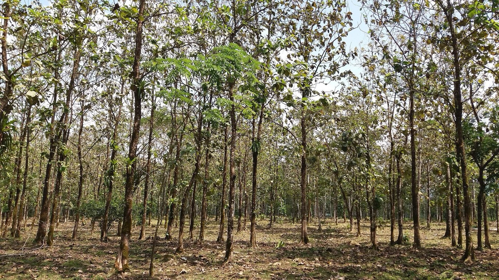

01 · Madera de teca
Teca de plantación, grado A.
Un suministro premium de madera seleccionada y de alta calidad para carpintería de alta gama, mobiliario, construcción y tarima exterior premium.
- Volumen disponible
- 54.000 m³
- Edad del bosque
- 25–28 años
- Grado
- A, sin nudos ni albura
- Incoterm
- FOB Puerto Cabello
Ficha completa de la teca
| Especie | Teca (Tectona grandis) |
|---|---|
| Origen | Plantación |
| Volumen disponible | Bosque de plantación de 54.000 m³ |
| Edad del bosque | 25–28 años (bosque maduro) |
| Grado | A, sin nudos y sin albura |
| Certificación | Certificado CITES disponible |
| Diámetro en punta de la troza | Aprox. 20–27 cm |
| Largo de la troza | Aprox. 2,40–3,00 m |
| Formatos | Trozas, tablones, tablas y perfiles de tarima |
| Medidas | A medida, según pedido; patrones de corte flexibles |
| Usos principales | Carpintería de alta gama, mobiliario, construcción, tarima premium |
| Incoterm | FOB Puerto Cabello, Venezuela |